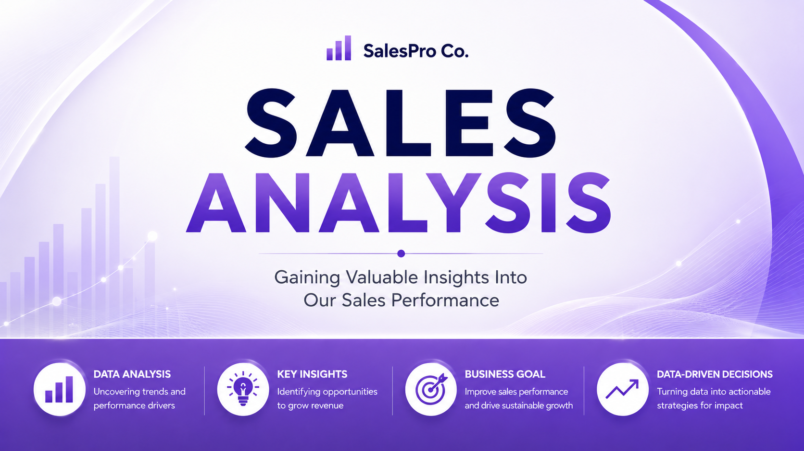

AdventureWorks Sales Analysis
Explored sales trends, customer segments, and product performance using SQL queries and business-facing analysis.

Business Question
Which products, customer groups, and time periods drive sales performance?
Approach
Used SQL to extract, aggregate, segment, and compare performance across the AdventureWorksDW2019 dataset.
Deliverables
SQL repository and business presentation with dashboards, executive insights, and actionable recommendations.